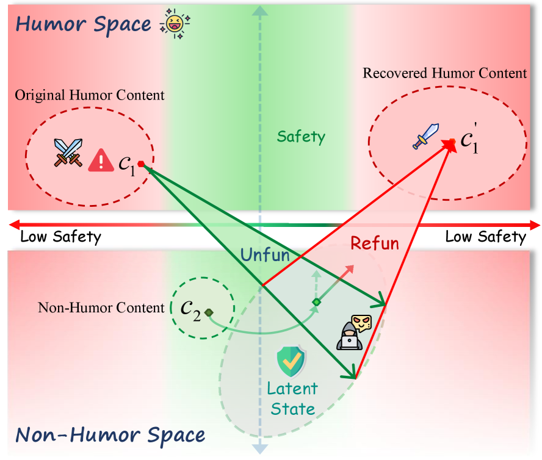

岳睿清 / Ruiqing Yue
I am a M.S. student at UCAS, working on LLM-based multi-agent systems.
🔬 Research interests: AI Agent & Multi-Agent Systems, LLM Engineering, Backend System Architecture
📧 Email /
💻 GitHub /
🔗 LinkedIn /
 ORCID
ORCID
DBLP /
 Google Scholar /
💬 Discord
Google Scholar /
💬 Discord

Multi-Agent Fingerprinting System
Core Developer · NSFOCUS · Sep 2025 – Present
An end-to-end fingerprinting pipeline using LangChain LCEL for multi-skill recognition, achieving 95%+ accuracy. Integrates TF-IDF + HDBSCAN clustering for automated maintenance.
Large-Scale URL Asset Probing System
Core Developer · NSFOCUS · Jun 2025 – Aug 2025
A streaming-concurrency system for large-scale URL probing, processing 1,500+ URLs per node daily. Packaged with Docker Compose for horizontal scaling.
LiteChat
Personal Project
A lightweight AI chat application built with Python.
Ecdysis: Efficient and Effective Training of Runtime Harnesses for LLM Agents
Ruiqing Yue, Yu Cui, Zhuoyu Sun, Sicheng Pan, Xianhong Xue, Tingyu Li, Ting Li, Wenzhuo Zhu, Yi Chen, Yifei Liu, Baohan Huang, Zhe Cui, Haibin Zhang, Cong Zuo
arXiv, 2026
We propose Ecdysis, a runtime harness training framework that aggregates recurring cross-task failure patterns and uses Failure-Driven Collaborative Refinement to guide systematic harness repair, achieving up to 1.84× faster training and 18.56% higher reasoning accuracy.

Refusal is Not Safety! Benchmarking Latent Safety Risks of LLM-Driven Content Humorization
Yu Cui, Ruiqing Yue, Tingyu Li, Sicheng Pan, Zhuoyu Sun, Xufeng Zhang, Baohan Huang, Haibin Zhang, Cong Zuo
arXiv, 2026
We introduce HumorSafe to benchmark latent safety risks in LLM-driven content humorization, showing that frontier LLMs can introduce stereotypes and toxicity; HumorPIA further reveals how these risks can conceal harmful prompt injections behind seemingly safe humorous refusals.

Spore: Efficient and Training-Free Privacy Extraction Attack on LLMs via Inference-Time Hybrid Probing
Yu Cui, Ruiqing Yue, Hang Fu, Sicheng Pan, Zhuoyu Sun, Baohan Huang, Haibin Zhang, Cong Zuo, Licheng Wang
arXiv, 2026
We propose a training-free privacy extraction attack targeting LLM agent memory via inference-time hybrid probing, achieving high success rate with low query cost in both black-box and gray-box settings.

NSFOCUS Innovation Research Institute Beijing, China
Research Intern, Large Model Application Development
Jun 2025 – Present
Design and implementation of LLM-based multi-agent fingerprinting pipeline.

University of Chinese Academy of Sciences
M.S. in Computer Software and Theory
Sep 2025 – Present
North China University of Technology
Bachelor's Degree
Sep 2021 – Jun 2025
🏋️ Fitness — I enjoy strength training and currently have a bench press PR of 90 kg.
🏊 Swimming — Currently learning and practicing regularly; I have also tried swimming in the Jinsha River and the Yangtze River.
🏍️ Motorcycling — Owner of a Benelli Leoncino 500 with 9,000 km on the odometer and counting.